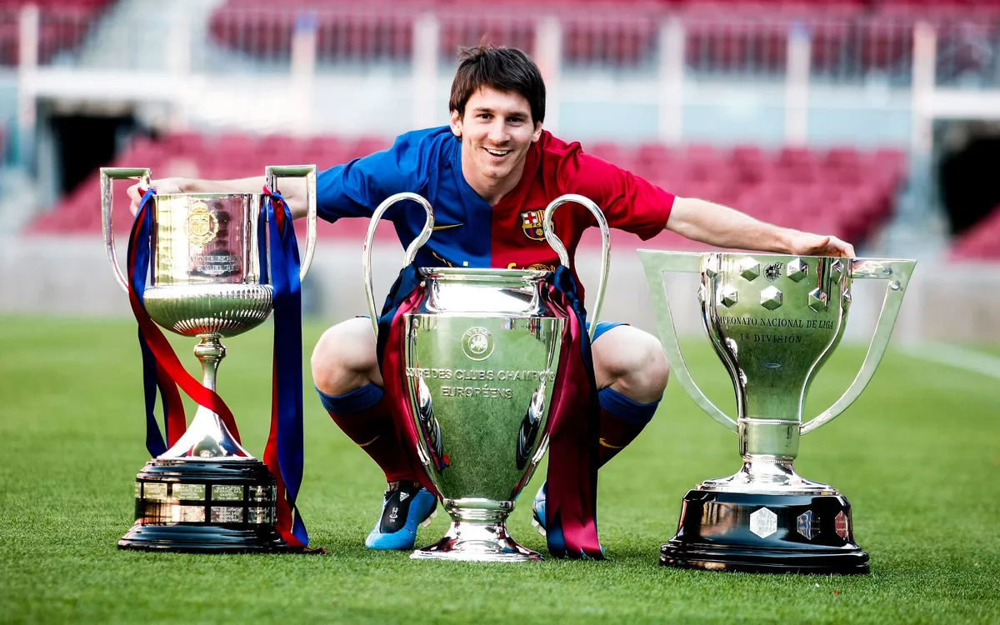

La Pulga Atómica

Lionel Messi es considerado por muchos como el mejor futbolista de todos los tiempos. Nacido en Rosario, Argentina, llegó al FC Barcelona a los 13 años para tratar su déficit de hormona de crecimiento, convirtiéndose en la mayor joya de La Masía.
Debutó con el primer equipo a los 16 años y 145 días bajo Frank Rijkaard, convirtiéndose en el jugador más joven en debutar con el Barça en partido oficial. En 2009, con Pep Guardiola, inició una era dorada que incluyó 6 Balones de Oro y el histórico sextete en 2009.
Como máximo goleador e histórico del club (672 goles), lideró al Barça a conquistar 35 títulos antes de su emotiva salida en 2021. Johan Cruyff lo definió: "Messi es único, un jugador que solo nace cada 50 años".
En 2022 coronó su leyenda ganando el Mundial con Argentina, completando así todos los títulos posibles en el fútbol.